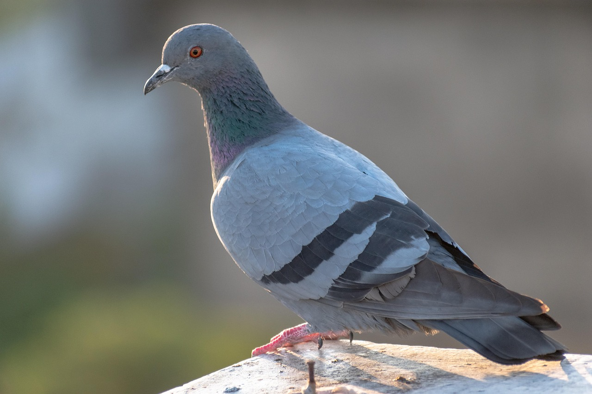

Best Birds

Some Pigeons Are War Veterans
During the 20th century it was common for countries to have flocks of homing pigeons for military use. The birds could quickly deliver important messages between bases or across enemy lines. Pigeons are credited with saving thousands of lives through the information they so diligently delivered, commonly known as pigeon post.
One pigeon named G.I. Joe saved British troops from a bombing with just 5 minutes to spare, earning him a medal of honor. Another famous pigeon, Cher Ami, delivered a total of 12 important messages for the U.S. military during WWI. On his last mission, Cher Ami was shot in the breast and still managed to fly for another 25 minutes, completing his mission and saving the lives of 194 stranded soldiers.